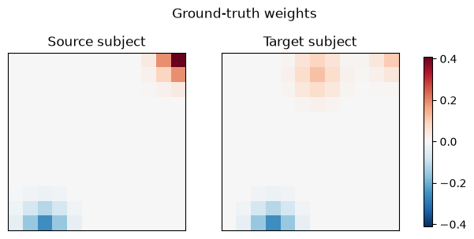
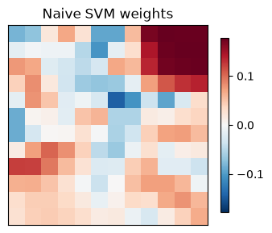
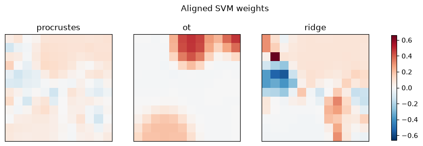
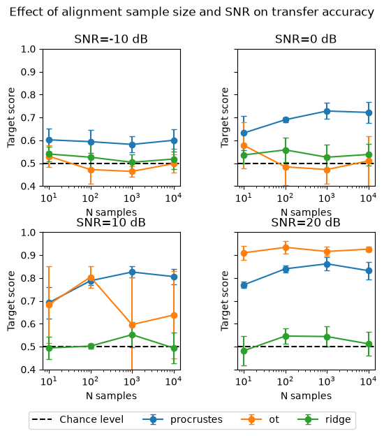

Improving Inter-Subject Decoding#
In this notebook, we will see how functional alignment can improve inter-subject decoding; that is, our ability to learn one decoding model on source subject(s) and generalize it to target subject(s).
Here, we will use simulated data to make the point more cleanly and to speed up computation time. In this simulated dataset, two subjects share the same underlying cognitive signal, but this signal is expressed through subject-specific spatial patterns, and is corrupted by independent, spatially smooth noise. This mimics how the same mental process can produce different topographies across individuals in fMRI data, such that a decoder trained on raw voxels does not transfer across subjects.
We compare a classifier trained directly on the source subject to classifiers trained after aligning the source onto the target with PairwiseAlignment, using the Procrustes, Optimal Transport, and Ridge alignment methods.
This notebook is taked from the fmralign documentation.
Comparing the ground-truth spatial patterns#
We display the ground-truth spatial patterns for the source and target subjects. As in real data, the underlying weights differ both in location and strength.
import matplotlib.pyplot as plt
size = 12
(
X_alignment_source,
X_train_source,
X_test_source,
coefs_source,
X_alignment_target,
X_train_target,
X_test_target,
coefs_target,
y_train,
y_test,
) = simulate_paired_subjects(
snr=20, n_samples_alignment=100, size=size, random_state=0
)
def plot_patterns(patterns, titles, suptitle):
fig, axes = plt.subplots(
1, len(patterns), figsize=(4 * len(patterns), 3.5)
)
axes = np.atleast_1d(axes)
vmax = np.abs(patterns).max()
for ax, pattern, title in zip(axes, patterns, titles, strict=True):
im = ax.imshow(pattern, vmin=-vmax, vmax=vmax, cmap="RdBu_r")
ax.set_title(title)
ax.set_xticks(())
ax.set_yticks(())
fig.colorbar(im, ax=axes, shrink=0.8)
fig.suptitle(suptitle)
plot_patterns(
[coefs_source, coefs_target],
["Source subject", "Target subject"],
"Ground-truth weights",
)

Decoding across subjects without alignment#
A linear SVM trained on the source subject decodes well on held-out source data, but its spatial weights do not match the target subject’s patterns, so decoding performance drops on the target.
from sklearn import svm
from sklearn.pipeline import make_pipeline
from sklearn.preprocessing import StandardScaler
svm_naive = make_pipeline(StandardScaler(), svm.SVC(kernel="linear"))
svm_naive.fit(X_train_source, y_train)
print(
"Naive SVM score on source:",
svm_naive.score(X_test_source, y_test),
)
print(
"Naive SVM score on target:",
svm_naive.score(X_test_target, y_test),
)
plot_patterns(
[svm_naive.named_steps["svc"].coef_.reshape(size, size)],
["Naive SVM weights"],
"",
)
Naive SVM score on source: 0.77
Naive SVM score on target: 0.25

Aligning subjects before decoding#
PairwiseAlignment learns a transformation from the source to the target subject on a separate set of alignment samples.
Applying this transformation to the source subject’s training data before fitting the decoder recovers spatial weights that better match the target subject, for each of the three alignment methods.
from fmralign import PairwiseAlignment
methods = ["procrustes", "ot", "ridge"]
aligned_weights = []
for method in methods:
algo = PairwiseAlignment(method=method)
algo.fit(X_alignment_source, X_alignment_target)
X_train_source_aligned = algo.transform(X_train_source)
svm_aligned = make_pipeline(StandardScaler(), svm.SVC(kernel="linear"))
svm_aligned.fit(X_train_source_aligned, y_train)
aligned_weights.append(
svm_aligned.named_steps["svc"].coef_.reshape(size, size)
)
print(
f"SVM aligned with {method} target score:",
svm_aligned.score(X_test_target, y_test),
)
plot_patterns(aligned_weights, methods, "Aligned SVM weights")
SVM aligned with procrustes target score: 0.84
SVM aligned with ot target score: 0.89
SVM aligned with ridge target score: 0.54

Influence of the number of alignment samples and SNR#
We repeat the simulation many times to study how decoding accuracy on the target subject depends on the amount of data available for alignment and on the signal-to-noise ratio, for each method.
def score_method(method, snr, n_samples_alignment, random_state):
(
X_alignment_source,
X_train_source,
_,
_,
X_alignment_target,
_,
X_test_target,
_,
y_train,
y_test,
) = simulate_paired_subjects(
snr=snr,
size=12,
n_samples_alignment=n_samples_alignment,
random_state=random_state,
)
algo = PairwiseAlignment(method=method)
algo.fit(X_alignment_source, X_alignment_target)
X_train_source_aligned = algo.transform(X_train_source)
svm_aligned = make_pipeline(StandardScaler(), svm.SVC(kernel="linear"))
svm_aligned.fit(X_train_source_aligned, y_train)
return svm_aligned.score(X_test_target, y_test)
n_samples = [10, 100, 1000, 10000]
snrs = [-10, 0, 10, 20]
n_repeats = 5
fig, axes = plt.subplots(2, 2, figsize=(6, 6.5), sharey=True)
for ax, snr in zip(axes.ravel(), snrs, strict=True):
for method in methods:
scores = np.array(
[
[
score_method(method, snr, n, random_state)
for random_state in range(n_repeats)
]
for n in n_samples
]
)
ax.errorbar(
n_samples,
scores.mean(axis=1),
yerr=scores.std(axis=1),
marker="o",
capsize=3,
label=method,
)
ax.axhline(0.5, color="k", linestyle="--", label="Chance level")
ax.set_xscale("log")
ax.set_xlabel("N samples")
ax.set_ylabel("Target score")
ax.set_title(f"SNR={snr} dB")
ax.set_ylim(0.4, 1)
ax.set_box_aspect(1)
handles, labels = axes[0, 0].get_legend_handles_labels()
fig.legend(
handles,
labels,
loc="upper center",
bbox_to_anchor=(0.5, 0.1),
ncol=len(labels),
)
fig.suptitle("Effect of alignment sample size and SNR on transfer accuracy")
fig.tight_layout(rect=(0, 0.1, 1, 0.98))

Conclusion#
All three alignment methods improve decoding performance on the target subject compared with the unaligned baseline. This improvement generally increases with the number of samples used for alignment.
In low-SNR settings, such as with BOLD signals, Procrustes performs best. Its highly constrained alignment matrix makes it more robust to noise.
In high-SNR settings, such as with statistical maps, Optimal Transport performs best, thanks to its ability to capture finer spatial patterns.
Ridge regression requires estimating a \(n_{\mathrm{voxels}} \times n_{\mathrm{voxels}}\) matrix. Consequently, it typically requires tens of thousands of alignment samples to be reliably estimated, as it has the mildest regularization of the three methods.
In practice, the best alignment method depends on both the type of data and the number of samples available for alignment.